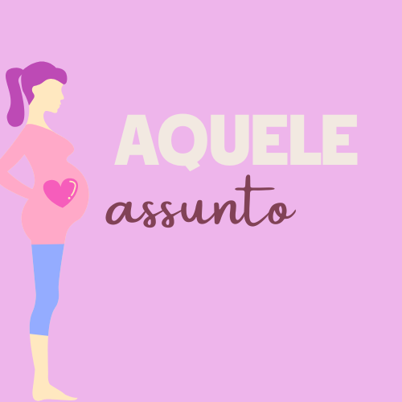

Este site tem a intenção de reforçar informações primordiais para o bem-estar e saúde das pessoas. Elaborado em uma linguagem simples para ajudar na conscientização de adolescentes e jovens que às vezes possuem dificuldade de abordar assuntos relacionados a educação sexual com suas famílias, tendo em vista que o assunto ainda é um tabu em muitos dos lares brasileiros. Por falta de informação, muitos adolescentes e jovens podem ainda sofrer algum tipo de violência, seja física ou psicológica, engravidar cedo, correr risco de contrair doenças, ou consumir drogas lícitas e ilícitas.